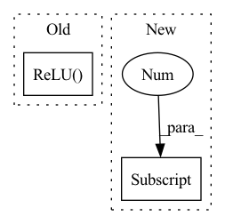

Pattern ID :1103

Before Change
self.operators = nn.ModuleList([
Flatten(),
nn.Linear(in_dim + action_dim, hidden_dim),
nn.ReLU()
])
for l in range(num_layers_linear_hidden - 1):
self.operators.append(nn.Linear(hidden_dim, hidden_dim))
After Change
else:
raise NotImplementedError(f"{layer} not known")
self.operators.append(nn.Linear(prev_object[1], 1))
self.operators.apply(init_xavier_uniform)
In pattern: SUPERPATTERN
Frequency: 5
Non-data size: 2
Instances
Fragment ID: 3338432
Project Name: tmdt-buw/karolos
Commit Name: bda97ff0aa40ddff62e42733856c4c66cc37b8b6
Time: 2020-05-13
Author: timo.thun@ima-ifu.rwth-aachen.de
File Name: agents/nnfactory/sac.py
M Class Name: Critic
N Class Name: Critic
M Method Name: __init__(4)
N Method Name: __init__(5)
M Parent Class: nn.Module
N Parent Class: nn.Module
M File Name: agents/nnfactory/sac.py
N File Name: agents/nnfactory/sac.py
M Start Line: 34
M End Line: 53
N Start Line: 45
N End Line: 65
'>
Before Change
self.operators = nn.ModuleList([
Flatten(),
nn.Linear(in_dim, hidden_dim),
nn.ReLU()
])
for l in range(num_layers_linear_hidden - 1):
self.operators.append(nn.Linear(hidden_dim, hidden_dim))
After Change
self.operators = nn.ModuleList([
Flatten(),
nn.Linear(in_dim, prev_object[1]),
])
for layer, argument in policy_structure[:-1]:
'>
Fragment ID: 3338423
Project Name: tmdt-buw/karolos
Commit Name: bda97ff0aa40ddff62e42733856c4c66cc37b8b6
Time: 2020-05-13
Author: timo.thun@ima-ifu.rwth-aachen.de
File Name: agents/nnfactory/sac.py
M Class Name: Policy
N Class Name: Policy
M Method Name: __init__(6)
N Method Name: __init__(7)
M Parent Class: nn.Module
N Parent Class: nn.Module
M File Name: agents/nnfactory/sac.py
N File Name: agents/nnfactory/sac.py
M Start Line: 65
M End Line: 87
N Start Line: 88
N End Line: 108
'>
Before Change
stride=self.custom_config["model_arch_args"]["stride_layer_{}".format(i)],
padding=self.custom_config["model_arch_args"]["padding_layer_{}".format(i)],
)
relu_f = nn.ReLU()
pool_f = nn.MaxPool2d(kernel_size=self.custom_config["model_arch_args"]["pool_size_layer_{}".format(i)])
layers.append(conv_f)
layers.append(relu_f)
After Change
encoder_layer_dim.append(out_dim)
self.encoder_layer_dim = encoder_layer_dim
self.obs_size = self.full_obs_space.shape[0]
input_dim = self.obs_size
for out_dim in self.encoder_layer_dim:
layers.append(
SlimFC(in_size=input_dim,
'>
Fragment ID: 3338427
Project Name: replicable-marl/marllib
Commit Name: 2d4a24632db3e3a2b79e668e480b40ec8052cf2a
Time: 2023-02-25
Author: hhhusiyi@163.com
File Name: marllib/marl/models/zoo/mlp/jointQ_mlp.py
M Class Name: JointQ_MLP
N Class Name: JointQ_MLP
M Method Name: __init__(6)
N Method Name: __init__(6)
M Parent Class: nn.Module,TorchModelV2
N Parent Class: nn.Module,TorchModelV2
M File Name: marllib/marl/models/zoo/mlp/jointQ_mlp.py
N File Name: marllib/marl/models/zoo/mlp/jointQ_mlp.py
M Start Line: 18
M End Line: 84
N Start Line: 20
N End Line: 84
'>
Before Change
bias=False,
indice_key="spconv_down2"),
build_norm_layer(norm_cfg, self.output_channels)[1],
nn.ReLU())
def forward(self, voxel_features, coors, batch_size):
Forward of SparseUNet
After Change
assert isinstance(order, tuple) and len(order) == 3
assert set(order) == {"conv", "norm", "act"}
if self.order[0] != "conv": // pre activate
self.conv_input = make_sparse_convmodule(
in_channels,
self.base_channels,
'>
Fragment ID: 3338430
Project Name: open-mmlab/mmdetection3d
Commit Name: df7e4e30bc7e5b692dd3b483409e1c4080c4793e
Time: 2020-05-17
Author: wuyuefeng@sensetime.com
File Name: mmdet3d/models/middle_encoders/sparse_unet.py
M Class Name: SparseUNet
N Class Name: SparseUNet
M Method Name: __init__(11)
N Method Name: __init__(11)
M Parent Class: nn.Module
N Parent Class: nn.Module
M File Name: mmdet3d/models/middle_encoders/sparse_unet.py
N File Name: mmdet3d/models/middle_encoders/sparse_unet.py
M Start Line: 46
M End Line: 96
N Start Line: 44
N End Line: 92
'>
Before Change
stride=self.custom_config["model_arch_args"]["stride_layer_{}".format(i)],
padding=self.custom_config["model_arch_args"]["padding_layer_{}".format(i)],
)
relu_f = nn.ReLU()
pool_f = nn.MaxPool2d(kernel_size=self.custom_config["model_arch_args"]["pool_size_layer_{}".format(i)])
layers.append(conv_f)
layers.append(relu_f)
After Change
encoder_layer_dim.append(out_dim)
self.encoder_layer_dim = encoder_layer_dim
self.obs_size = self.full_obs_space.shape[0]
input_dim = self.obs_size
for out_dim in self.encoder_layer_dim:
layers.append(
SlimFC(in_size=input_dim,
'>
Fragment ID: 3338431
Project Name: replicable-marl/marllib
Commit Name: 2d4a24632db3e3a2b79e668e480b40ec8052cf2a
Time: 2023-02-25
Author: hhhusiyi@163.com
File Name: marllib/marl/models/zoo/rnn/jointQ_rnn.py
M Class Name: JointQ_RNN
N Class Name: JointQ_RNN
M Method Name: __init__(6)
N Method Name: __init__(6)
M Parent Class: nn.Module,TorchModelV2
N Parent Class: nn.Module,TorchModelV2
M File Name: marllib/marl/models/zoo/rnn/jointQ_rnn.py
N File Name: marllib/marl/models/zoo/rnn/jointQ_rnn.py
M Start Line: 28
M End Line: 81
N Start Line: 20
N End Line: 85